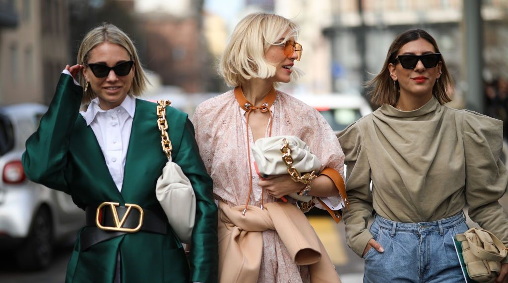
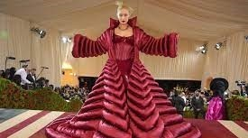

El Arte de los Accesorios: Gafas de Sol, Guantes y joyas
Examina la importancia de los accesorios en la moda y muestra cómo Edna Moda a menudo juega con guantes, joyas y gafas de sol.
Tendencias de Moda que Debes Conocer en la Temporada de Primavera/Verano
Analiza las tendencias de moda actuales y cómo puedes incorporarlas en tu propio estilo.
Los Colores de Edna Moda: Cómo Incorporar el Rojo y el Negro en tu Vestuario
Cómo utilizar los colores característicos de Edna en tu ropa de manera elegante y audaz.
Los Iconos de la Moda Inspirados por Edna.
Explora cómo Edna Moda ha influido en la moda del mundo real y presenta a diseñadores y marcas que han adoptado su estilo único.

Moda de Lujo vs. Moda asequible: Consejos para un Look de Alto Estilo
Encontrá opciones asequibles que capturen la esencia de la moda de lujo.

Edna Moda en la Alfombra Roja: Analizando sus Mejores Looks en Eventos de la Industria
Analizando los looks mas llamativos de la alfombra roja
El Poder del Peinado
Tutoriales y ejemplos para lograr un peinado iconico que acompañe tu look.
El Lado Empresarial de Edna Moda: Cómo Crear tu Propia Línea de Moda
Los consejos de Edna para aquellos interesados en iniciar su propia línea de moda.